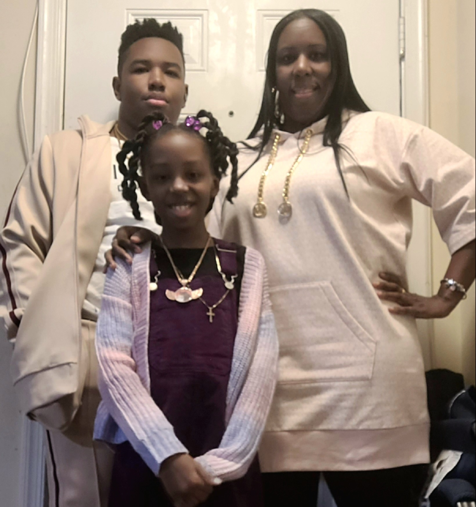
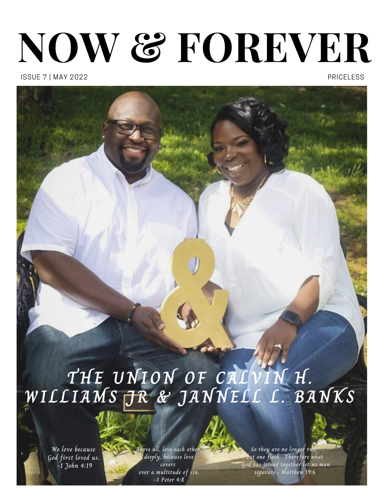
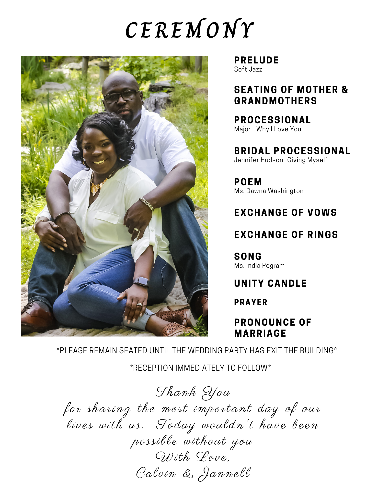
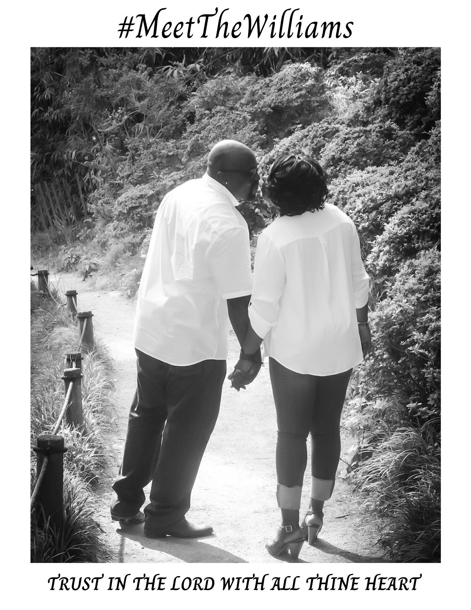
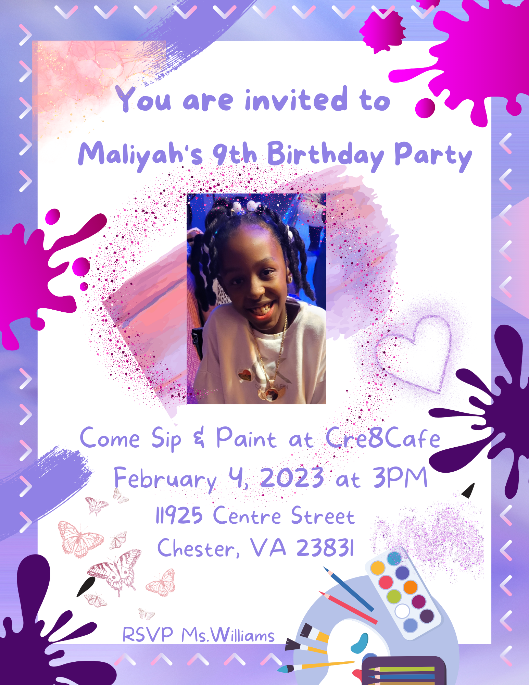
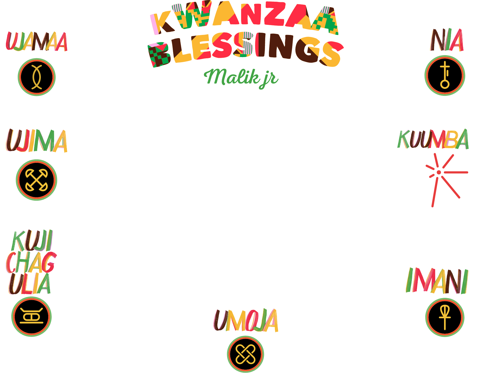
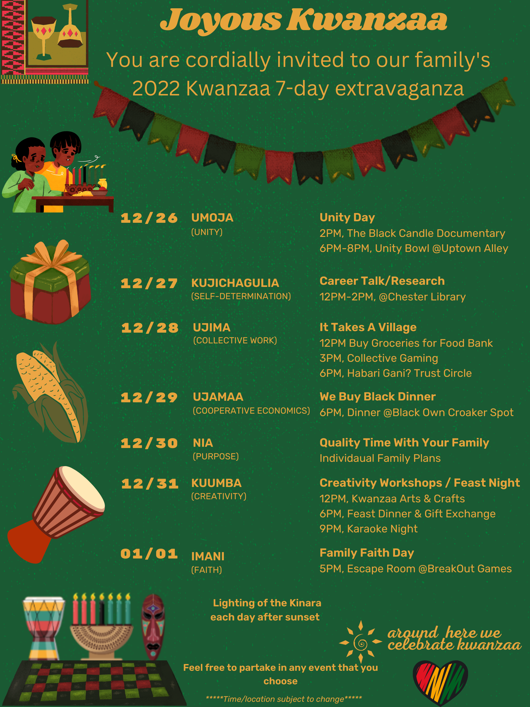

Faith makes all things possible
Love makes all things easy
Hope makes all things work
Never stop believing in hope
because miracles happen everyday
Get To Know Me
My Kids are my Motivation

Hello, my name is Tennille Williams and I am ambitiously working to accomplish my dream of becoming a Software Engineer. I was born and raised in Brooklyn, NY (hint hint Brooklyn Bridge backdrop) and now currently reside in Virginia. I graduated from Pace University in 2005 with a Masters in Computer Science and a minor in Information Systems. As life may have it after graduation I didn't land a job in my field so I settled for a career in Insurance. Currently, I am working at Travelers Insurance as a Business Process Analyst. Now after becoming a mother and motivating my kids to follow their dreams I realized that I still have another dream to go after. So here I am currently enrolled in MIT Full Stack MERN bootcamp pursing my dream. Please explore my page to learn more about me and to see some of my projects. You can also find more projects and view my coding repositories on my GitHub page under the name TennWilliams, link is in Nav Bar. Reach out to me via my LinkedIn page to let me know what you think. And remember its never too late to accomplish your goals. Have a wonderful day!!!!
Check out my YouTube Video to get to know me better. Then reach out to me via my LinkedIn Page (Link to page is in right hand corner of Nav Bar)
My Skills
Leadership
Agile Methodology
Process Improvement
HTML
JavaScript
Power Apps
Analytical
SharePoint Designer
Problem Solving
MIT Projects
Below are some of my JavaScript projects that I coded while attending MIT Full Stack MERN Certification Course. To see these projects in full effect and for each project's description please visit my . To see my other projects please vist my GitHub repository site via the GitHub link in the Navigation Bar.
Put Your Hands Where My Eyes Can See
How Many Stops Do I have?
PacMan Game
Passion Projects
I always had a love for programming since high school when I started studying it but the focus was mainly on the back end of programming. However over the years I have been drawn to the creativity of the front end of programming and am looking to explore this passion of mine more. In my spare time I design invites, programs and flyers for family members and have listed some of these projects below.






At work, I was given the opportunity to build and design my team's new SharePoint Online site and this has given me the chance to tap into my creative side. Please view my video showcasing this site and as always you can contact me via LinkedIn.